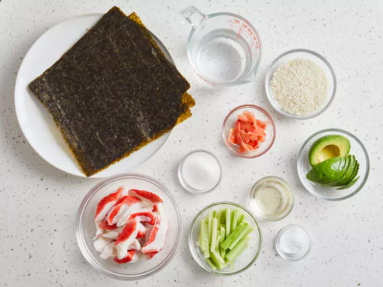
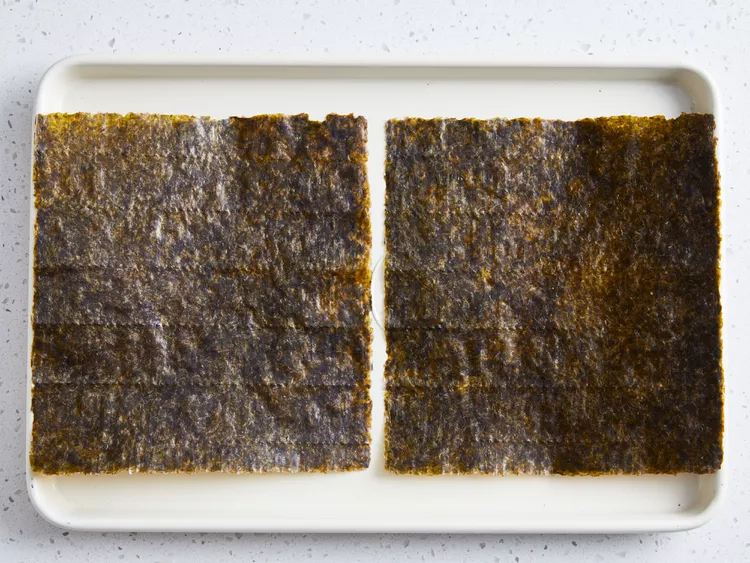
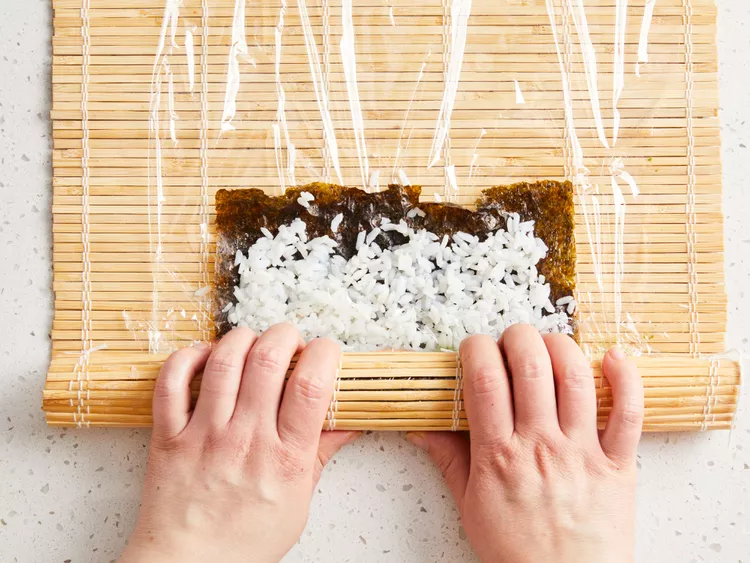
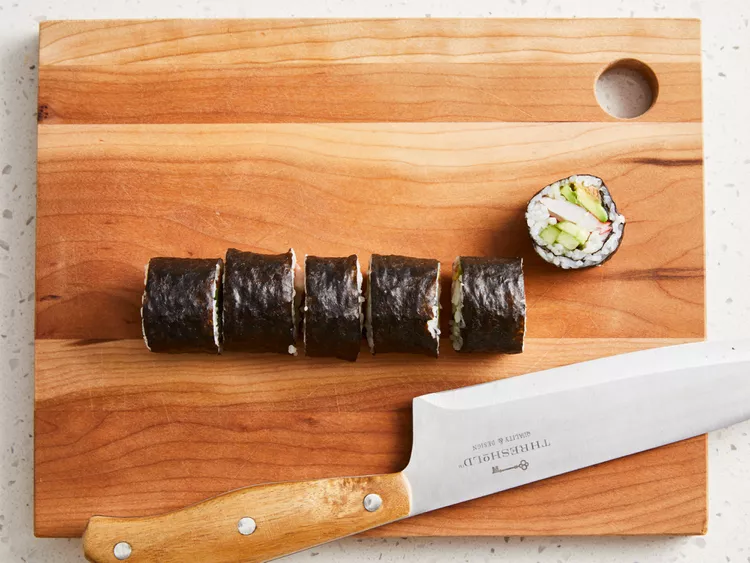

Sushi

Sushi is a versatile dish featuring seasoned short-grain rice and nori sheets wrapped around imitation crab, avocado, and cucumber. The rice is flavored with a traditional vinegar-sugar-salt blend to provide a tangy base for the fresh fillings.
Accessible to home cooks, these rolls are easily assembled with a bamboo mat or dish towel and sliced into bite-sized pieces. Served with ginger and wasabi, they offer a customizable, restaurant-style experience that can be adapted with various proteins and vegetables.
Sushi ingredients
- Rice and base
- ⅔ cup uncooked short-grain white rice
- 1 ⅓ cups water
- 4 sheets nori (seaweed)
- Rice Seasoning
- 3 tablespoons rice vinegar
- 3 tablespoons white sugar
- 1 ½ teaspoons salt
- Fillings & Garnish
- ½ pound imitation crabmeat, flaked
- 1 avocado (peeled, pitted, and sliced)
- ½ cucumber (peeled and cut into small strips)
- 2 tablespoons pickled ginger
Steps
- Gather all ingredients. Preheat the oven to 300 degrees F (150 degrees C).

- Bring water to a boil in a medium pot; stir in rice. Reduce heat to medium-low, cover, and simmer until rice is tender and water has been absorbed, 20 to 25 minutes.
- Mix rice vinegar, sugar, and salt in a small bowl. Gently stir into cooked rice in the pot and set aside.

- Lay nori sheets on a baking sheet.

- Heat nori in the preheated oven until warm, 1 to 2 minutes.
- Center 1 nori sheet on a bamboo sushi mat. Use wet hands to spread a thin layer of rice on top. Arrange 1/4 of the crabmeat, avocado, cucumber, and pickled ginger over rice in a line down the center.

- Lift one end of the mat and roll it tightly over filling to make a complete roll. Repeat with remaining ingredients.

- Use a wet, sharp knife to cut each roll into 4 to 6 slices.

Home